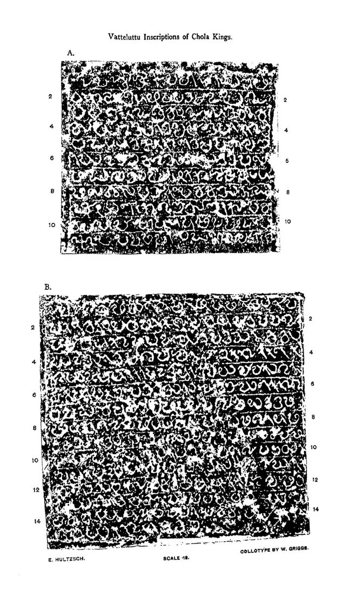
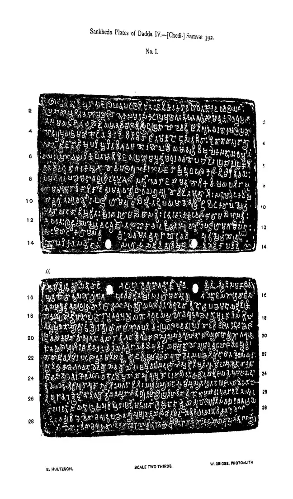
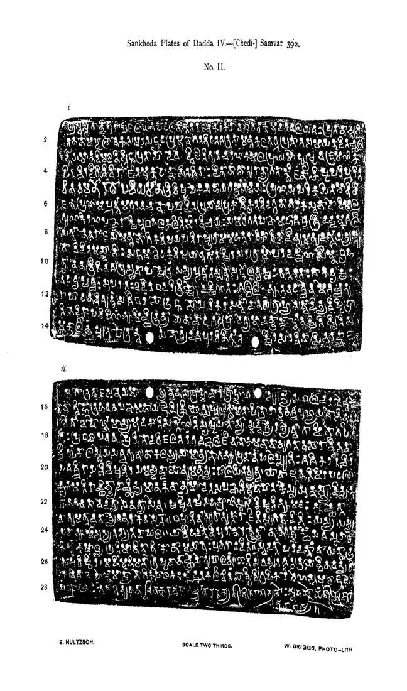
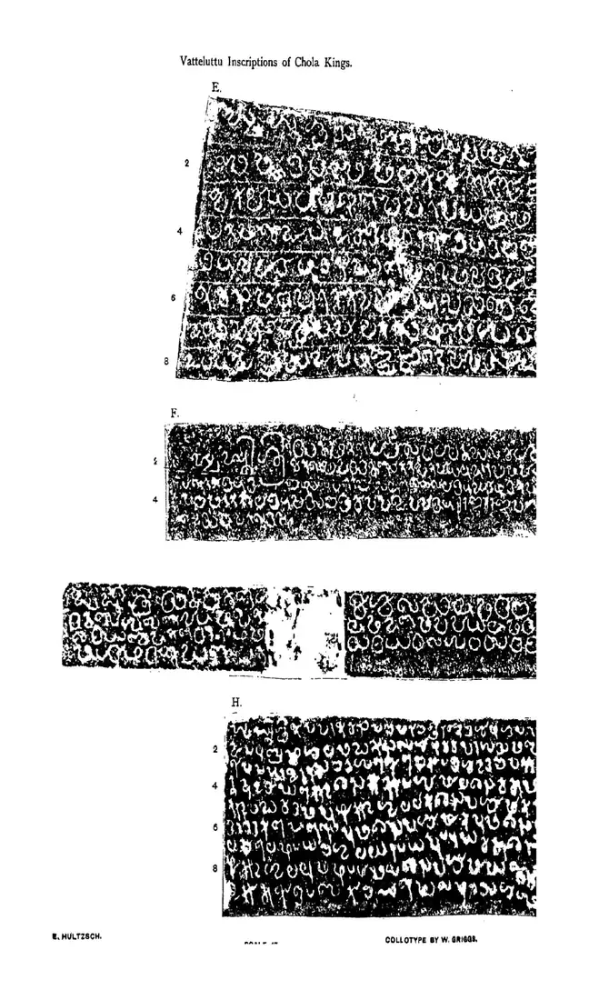
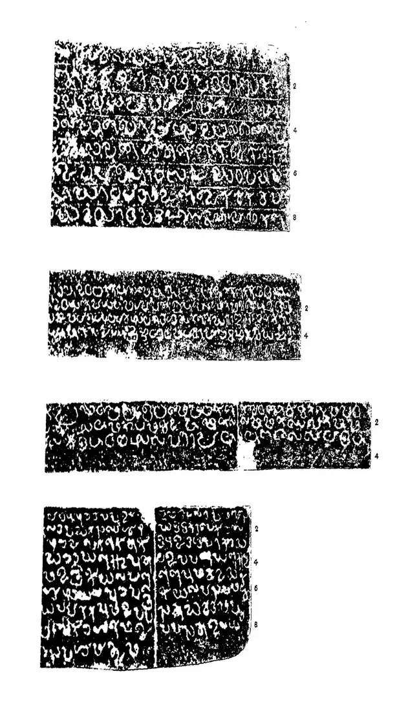

Eight Vaṭṭejuttu inscriptions of Chōḷa kings
No. 6.—EIGHT VATTELUTTU INSCRIPTIONS OF CHOLA KINGS.
By E. HULTZSCH, PH.D.
24 न्ता च तान्येव नरके वसेत्
॥ वन्ध्याटवोष्वतीयासु शुष्ककोटरवासिनः
न्ते भूमिदायं हर-1
राजभिः सगरादिभिः [*] यस्य यस्य
फलं ॥ यानीह ताद-2
शस्कराणि [*] निर्भुक्तमात्यप्रतिमानि
पुनराददीत ॥ स्वद-3
उर । महीं महिमतां श्रेष्ठ दानाच्छे-
Professor Bühler in his Indian Palcography (p. 72 f. of the German edition) and Mr. Venkayya in his paper on the Kôttāyam plate of Vira-Râghava (above, Vol. IV. p. 293) have lately urged the necessity of publishing Vatteluttu inscriptions, the dates of which can be fixed with some certainty. Hence I take this opportunity for issuing mechanical copies of eight Chôla inscriptions. None of these is in a condition of complete preservation; but I trust that, even in their necessarily imperfect state, the accompanying facsimiles will prove useful for tracing the development of the Vatteluttu alphabet.
[1*] कृष्णाहयो हि जाय
No. II.
Five of the inscriptions (A. to E.) are engraved on two boulders in the Sthâpunâtha temple at Śuchindram between Kôttāgu and Cape Comorin in the Travancore State, and the remaining three (F. to H.) on the north wall of the shrine in the Râmasvâmin temple at Shèrmâdêvi in the Tinnevelly district: They belong to the reigns of the Chôla kings
25 न्ति ये ॥ वहुमिर्व्वसुधा भुक्ता
संवत्सरशतत्रये दिनवत्यधि- [27] के
वैशाखपौरण्यमास्यां भोगिकपालककक्कंदूतकं
लिखितं सान्धिविग्रहिकरेवेण स्वमुखाज्ञ-
येति [28] सं ३०० ९० २ वैशाख शु
१० ५ दिनकरचरणार्चनरतस्य श्रीवीत-
रागसूनोः स्वहस्तोयं श्रीप्रशा- [29]
न्तरागस्य ॥
यदा भूमिस्तस्य तस्य तद
26 नि पुरा नरेन्द्रैर्हीनानि धर्मार्ह्यय
तानि की नाम साधुः
27 तां परदत्तां वा यत्नाद्रक्ष युधिहि
योनुपालनमिति4 [॥*]
No. I.
संवत्सरशतत्रये [28] दि[न]वत्यधिके
वैशाखशुष्ठपञ्चदश्यां स्वमुखान्नया लिखि
तमिदं सन्धिविग्रहकरणाधिकृतरेवेण
[29] सं ३०० ९० २ वैशाख शु
१० ५ दिनकरचरणार्चनरतस्य श्रीवीत
रागसूनीः स्वहस्तीयं श्रीप्रशान्तरागस्य
[॥*]
1 No. II. omits the verse व(वि)ग्ध्याटवीषिव्यादि.
2 No. II has राजभिच्च°.— In No. II. line 23 ends with यस्य यस्य.— Read यागौष्ठ दत्तानि with No. II.
3 In No. II. line 24 ends with °यशस्त्रराणि.— No. II. has गिर्मुक्त°.
4 In No. II. line 25 ends with यदाद्र°.— No. II. has मर्हि.— Read महौमसां.— No. II. has पाखनं ॥ प्रवि.
Parakésarivarman (A.), Parântaka I. (B.), Râjarâja I. (C. to G.) and Râjèndra-Chôla I. (H.). The fact that all these inscriptions are found in the extreme south of the peninsula proves, what the Vațtełuttu inscriptions of the earlier Pândya kings suggest, that, about the 10th century of our era, the Vațtełuttu was current in the country of the Pândyas, but unknown in the native territory of their Chôla conquerors.
The characters of the subjoined inscriptions agree more closely with those of the Cochin and Tirunelli plates1 than with those of the plates of Jațilavarman.2 Throughout F., G. and H. once in C.3 and twice in D.4 occurs a variant of y, which is known from the Kôttayam plates of Sthânu-Ravi.5 In H. the double k is written as a group, as in many inscriptions in the Tamil alphabet. As in all other Vațtełuttu inscriptions, Grantha letters are occasionally used in the subjoined eight records. The following is a list of the Grantha words and letters:—
Svasti śri at the beginning of each of the eight inscriptions.—A., l. 11, sabhai.—C., l. 4, brahma; l. 5, Mahêdé; l. 11, sabtai.—D., ll. 4 and 6, ja of Râjendja; l. 7 f., brahma and m of brahmadêyam, and Sujêntîra.—E., l. 8, brahmadê and mah[â]sabhai.—F., ll. 3 and 4, Râjarâja; l. 4 f., brahma, mahâ and chchaturvê.—H., l. 1, śri and jêndru of śrî-Râjêndru, ja of Irâjarâja; l. 2, brahma; ll. 2, 8 and 9, sa of Vaigânasa; ll. 5 and 6, śri.
A.—Inscription in the Sthânunâtha temple at Śuchindram.6
This inscription records the gift of a lamp to the Śiva temple at Tiruchchivindiram, the modern Śuchindram, and is dated in the 34th year of the reign of the ancient Chôla king Parakésarivarman.7 As we know from the large Leyden grant and from actual examples in the history of the later Chôlas that the titles Râjakésarin and Parakésarin were borne alternately by reigning kings,8 some of those inscriptions which are dated in the reign of Parakésarivarman—without any distinguishing epithet, as Madirai-koṇa in the case of Parântaka I.,—may perhaps be attributed to Vijayâlaya, the grandfather of Parântaka I. and the earliest historical person that is referred to in two genealogical inscriptions of the Chôla dynasty.9
TEXT.10
| 1 | Srasti | śri [||*] | Kô=Pparakê[śa]ri[vaṇma]- |
| 2 | rkku11 | y[â]ṇdu | muppattu-nâlu i. |
| 3 | vv-[â]ṇ[d]u | Nâñji-nê[t]ṭtu | Tiruch- |
| 4 | chivindirattu | [M]âd[ê]varkku | Te- |
| 5 | ṇ-nâṭṭtu | Talaikku[la]ttu | [A]raiyaṇ-A- |
| 6 | ravin[daṇ] | śandi[r-âd]ji[tla]-va[la]- | |
| 7 | m13 | niyadi nlakku | ne[y] muṭṭ[â]- |
| 8 | mal | erivadâga | vaichcha tira-no- |
| 9 | ndâ-vijakku | onṇṇukku | vaich[cha*] |
| 10 | [ś]âvâ [mû]vâ pêr âdu | a[m]badu [|*] | [i]vai |
| 11 | aimbadum | paraṇ[ai]-sabhaiyârkku [||*] |
1 Above, Vol. III. p. 66 f. and Ind. Ant. Vol. XX. p. 283 f.
2 Ibid. Vol. XXII. p. 57 f.
3 In the second yâṇdu of line 2.
4 In yam, l. 8, and udaiya, l. 12.
5 Compare above, Vol. III. p. 66 f.
6 No. 81 of the Government Epigraphist's collection for 1896.
7 To the same reign belong Nos. 85 and 148 of South.Ind. Inscr. Vol. I., and No. 11 of Vol. III.
8 Ibid. Vol. I. p. 141, note 4.
9 Ibid. Vol. II. p. 379. Vijayâlaya is not mentioned in the Sholinghur inscription; above, Vol. IV. p. 222.
10 From an inked estampage.
11 Bead γku or rkku.
12 Read-val.
Plate 1 is bound after this page.
TRANSLATION.
Hail! Prosperity! In the year thirty-four (of the reign) of king Parakésarivarman who in this year Araiyan Aravindan of Talaikkulam in the southern country (Tey-u-do) of (the temple of) Mahâdêva (Šiva) at Tiruchechivindiram in Nāñji-nādu one temple of a lamp, to burn without fail (one) vilakku of ghee per day, as long as the merchant of it exist. For (this lamp he) gave fifty full-grown ewes, which must neither die nor grow well. These fifty (ewes were made over) to the members of the assembly2 (of the villaje).
B.—Inscription in the Sthânanâtha temple at Šuchindram.
This inscription is dated in the 40th year4 of the reign of “Parakésarivarman who conquered Madirai (Madhurâ) and İlam (Ceylon).” i.e. the Chója king Parantaka L. 5 and records that a merchant of Karavandapuram5 granted two lamps to two thines of Vishu which seem to have been located in the Šiva temple at Šuchindram.
TEXT.
1 Svasti [śrī] [||*] Madi[raiyu]m İlamum koṇda kô=P-
2 para[kô]śa[ri]vapmarkku [yân]du nârpadu i-
3 v[v-ân]du Ku[m]ba-nâ[y]īr[ru]=Tiruchchi-
4 vindirat[tu] Emberumâṇukku=Kkalak-
5 [k]uṇđ[i]-nâṭtu=[K]kara[va]ndapurat[tu] vi[y]âpâri Oru-
6 [nî]g[ai] Aranga[n] vaitta tiri-nondâ-vilakku c-
7 [n]ru nira [palattu] mu[ppadu] [||*] i[du] ni[śa]dam
8 u[la][kk=a]rai ne[y] muṭtâ[mal] pa[galu]n inavum
9 [śa]ndi[r]-âdi[ita-vax] e[r]i[vadâ]ga [vi]t[ta] [śâ]vâ mû-
10 vâ=[p]pêr-âđ[u] elu[ba]t-aiñju [||*] iva[nê] Tir[u]-
11 vê[n]gaṇda[nilai]kku [vaitta] ti-ri-[non]dâ-vilak-
12 ku oṇri[ṇuk]ku [ni]śa[da]m âl[â]k[ku] ne[y] mâṇ-
13 [pa]đi [e]ri[va]dâ[ga] vi[t]ta âđ[u] i[ru]batt-ai-
14 ñju [||*] â[ga] âdu nû[rum] pa[ra]dai-chchavai[y]â[rkku]
15 [kât]ti-kkuṇu[t]tana [||*]
TRANSLATION.
Hail! Prosperity! In the year forty (of the reign) of king Parakésarivarman who conquered Madirai and İlam,—in the month of Kumba of this year, Orungai Arangan, a merchant of Karavandapuram in Kalakkuđi-nâdu, gave one perpetual lamp,7 weighing thirty pulum, to (the temple of) Emberumâṇ (Vishu) at Tiruchechivindiram. In order that this
1 I.e. which have to be replaced by fresh ones when they die or cease to supply milk for the ghee; compute South-Ind. Inscr. Vol. II. p. 375, note 3.
2 Sabhai or bavai is the Tamil form of the Sanskrit sabhâ, and paradai is perhaps a corruption of the Sanskrit parishad.
3 No. 82 of the Government Epigraphist's collection for 1896.
4 An inscription of the same year is noticed in South-Ind. Inscr. Vol. II. p. 374 and note 8.
5 See ilid. p. 379 and note 8.
6 The same place is mentioned in two Pâṇdya inscriptions; Ind. Ant. Vol. XXII. pp. 67 and 74.
7 As stated in South-Ind. Inscr. Vol. II. p. 132, note 3, nondâ-vilakku or nandâ-vilakku are corruptions of nundâ-vilakku, which occurs in H., line 4, and in an inscription at Tirukkalukkungam (above, Vol. III. p. 284). The form tiri-nondâ-vilakku in the present inscription further suggests that tiru-nundâ-vilakku, ‘a sacred lamp which is never trimmed,’ has been developed by folk etymology from tiri-nundâ-vilakku, ‘a lamp the wiek of which is never trimmed’ (because ghee is continually supplied to it).
(lamp) might burn without fail, as long as the moon and the sun exist, during day and night, (one) ulakku and a half of ghee per day, (he) granted seventy-five full-grown ewes, which must neither die nor grow old.1 For one (other) perpetual lamp, which the same person gave to (the shrime of) Tiruvêngada[nilai],2 (he) granted twenty-five ewës, in order that (this lamp) might burn, in the same manner as stated above, (one) âlâkku of ghee per day. Altogether one hundred ewes were shown and made over to the members of the assembly.
C.—Inscription in the Sthânunâtha temple at Șuchindram.4
This inscription records the gift of a lamp by a native of Ceylon (îla-nâdu) in the 10th year of the reign of the Chôla king Râjarâja I., who ascended the throne in A.D. 985.5
TEXT.
| 1 | Svasti | śrī | [||*] | Kô | Irâsairâša-Kêsarivan- | |
| 2 | markku | yându | pattâm | yându | tuçan- | |
| 3 | giña | Karkadaga-nâ[yi*]nru | [Nâ]ñji-nât[tù] | |||
| 4 | brahmadêyam | Tiruchchi[v]in[di]rat[tu] | ||||
| 5 | Mahâdêvark[ku | îlja-[nâ]ttu | Mala[va]- | |||
| 6 | [raiya]n | [Še]n[ni] | Ka[nđa]n | [nišada]m | u[la]- | |
| 7 | k[ku] | ney | sandir-âditta-val | ira- | ||
| 8 | [vu]m | pa[ga]lum | [mu*][t]tâ[ma]l | erivadâga | [vai]- | |
| 9 | chcha | tir[u]-nondâ-vilak[k]u | onnru | [*] | [i]duk[ku] | |
| 10 | vai[ch]cha | [šâ]vâ | 6muvâ=ppêr=âdu | añmbadu7 | [*] | |
| 11 | ivai | mûla-paradai-[sa]bh[aiy]âr | vašam | kâtti- | ||
| 12 | kkuđuttana | || | mûla-paradai-chcha[vai]yârum | |||
| 13 | Emberumân | [V]ettîrkuđi | [Pa]dait[taru]- | |||
| 14 | [ma]n | Kapai[ya]n=dn[n]ai[y=â]kki8 | va[ša*][m] | k[â]tti- | ||
| 15 | k[ku]đuttana | [||*] |
TRANSLATION.
Hail! Prosperity! In the tenth year (of the reign) of king Râjarâja-Kêsarivarman, in the month of Karkataka with which (this) year began, Mala[varaiya]n[Še]n[ni] Ka[nđa]n of [î]la-nâdu gave to (the temple of) Mahâdêva at Tiruchochivindiram, a brahmadêya in Nâñji-nâdu, one sacred perpetual lamp, to burn without fail during night and day, as long as the moon and the sun exist, (one) ulakku of ghee per day. For this (lamp he) gave fifty full-grown ewes, which must neither die nor grow old.9 These (ewes) were shown and made over to the chief members of the assembly. And (by) the chief members of the assembly they were entrusted (?), shown and made over to [Pa]dait[taruma]n Kapai[ya]n of [V]ettîrkuđi, (a village belonging to the temple of) Emberumân (Vishnu).
D.—Inscription in the Sthânunâtha temple at Șuchindram.10
This inscription is dated in the 14th year of the reign of the same king as the preceding inscription. Its purport is doubtful owing to the bad preservation of lines 14 to 24, of which I am unable to publish a transcript and translation.
1 See above, p. 43, note 1.
2 Vângudam is the Tamiî name of the hill of Tirupati, which is sacred to Vishnu.
3 1 âlâkku=½ ulakku; see South-Ind. Inscr. Vol. II. p. 48, note 5, and p. 180, note 3.
4 No. 71 of the Government Epigraphist's collection for 1896.4
5 See below, p. 48 and note 6.
6 Read mûvâ.
7 Read aimbadu.
8 Read =dugaiy=(?).
9 See above, d. 43, note 1.
10 No. 75 of the Government Epigraphist's collection for 1896.
Plate 2 is bound after this page.
Plate 3 is bound after this page.
TEXT.
| 1 | Svasti [śrī] [||*] | Kāndaļūr-šālai | kalam-arut-u | |
| 2 | [Ka]ŭga-pādiyum | Nuļamba-pādiyum | Tadī- | |
| 3 | [y]ga-vaļi[y]um | Vēngai-nāđum | k- | |
| 4 | [n]đa | kō | Rājarāja-[K]ēšarivaņma- | |
| 5 | [r]ku | yā[n]đu | padi-nālu | ivv-ā- |
| 6 | nđu | Vi[ru]ch[ch]iga-nā[yi*][rxu] | Irējarija- | |
| 7 | [va]ļanāttu | Nāji-nā[t]tū | brahmadē- | |
| 8 | yam | Sujintirattu | Emmerumā[n]1 | |
| 9 | tēvadāņam | Niruba[š]ēgara[va]ļanallū- | ||
| 10 | r-ppál | [T]ēņvaļanallūr | mūg2 | |
| 11 | 3ki-kkārāņmai | uđaiya | [k]uđi- | |
| 12 | ga] | tānēdā | uđaiyār | uđaiya |
| 13 | [nila]ŭga] | [Nēr]i[yan]-Mūvēndavēļ[r] | šolla | [Nā]ŭji- |
| 14 | [nā]t[tū] | . . . . . | . . . . . |
TRANSLATION.
Hail! Prosperity! In the year fourteen (of the reign) of king Rājarāja-Kēšarivarnam, who, having destroyed the ships (at) Kāndaļūr-šālai, conquered Gaŭga-pādi, Nuļamba-pādi, Tađiga-vaļi4 and Vēngai-nāđu,—in the month of Vrīšchika of this year, the cultivators who were formerly sub-tenants of Tēņvaļanallūr, a portion of Nrīpašēkharavalanallūr, a dēvadāna (of the temple) of Emberumān (Vishpu) at Sujindiram, a brahmadėy in Nāji-nāđu, (a district) of Rājarāja-vaļanāđu,5 . . . . at the bidding of Nēriyan-Mūvēndavēļār6 . . . .
E.—Inscription in the Sthāņunātha temple at Šuchindram.7
This inscription is dated in the 15th year of the reign of the same king as the two preceding inscriptions (O. and D.). It consists of 22 lines, of which lines 9 to 22 are here omitted because I cannot make them out in full.
TEXT.
| 1 | Svasti śr[ī] [||*] | Tiru-maga[l] | pōla-pper[u]-ni[la]-ochelvi[y]un-daņak[kėy-uri]- | |
| 2 | mai | [p]ūnđamai | maya-k[k]ō=Kkān[de]ļur-Chchālai8 | kalam-arutt-araļi-K[ka]- |
| 3 | ŭga-pādi[u]m9 | Nuļambar-p[ā]đi[u]m9 | Tađi[ya]r-pā[d]i[u]m9 | [Vē]lō[gai]-nāđu[m] Ku]- |
| 4 | đagamalai-nāđu[n]=dan[đār]-kko[n]đu | taņn-e[l]l]il | viļaŭga t[i]yiil e[l]l][ā-yā]- | |
| 5 | nđun=do[l]=Udag][ai*] | vilā[ū]gum yānđėy [Še]lļiyarai tēsu ko! | kō Irāšarā[ša]- | |
| 6 | Kēšari[vaņma]rkku | [yā]nđu pađing-aiñ[ju] | iv[v]-ānđu Kaņni-[nāy]irku muv[v-a]- | |
| 7 | n[diy-āg]i [Š]e[v]vāy-[k]kiļamai | perxa | [Pū]rayirattādi-nā] Irāšarāša-va[la]- | |
| 8 | nāttu | [Nāji]i-nāttu | brahmadėyam T[iruch]chivi[nd]irattu | mah[t*]-sabhaiyōm kaļa- |
4 Other inscriptions have the forms Tađigaipādi, Tađigapdāi, Tađiyapdāi and Tađiyaraļi; see Soulā-Ind. Inscr. Vol. III. p. 29.
5 This designation was bestowed by Rājarāja I. on the Pānđya country; see ibid. Vol. II. p. 149, note 7, and Vol. III. p. 15, note 4.
6 The same person is mentioned again in the unpublished portion of the same inscription, l. 16 f.
7 No. 85 of the Government Epigraphist's collection for 1896.
8 Read 'ļār.9 Read -pādiyum.TRANSLATION.
Hail! Prosperity! In the year fifteen (of the reign) of king Râjarâja-Kêsarivarman, who, (in) the belief that, as well as the goddess of Fortune, the goddess of the great Earth had become his wife, was pleased to destroy the ships (at) Kândajûr-Šâlai; who conquered by (hâs) army Gañga-pâdi, Nułambar-pâdi, Tađiyar-pâdi, Vêngai-nâđu and Kuđagamalai-nâđu;1 and who, in the long time during which his youth was resplendent, deprived the Šeļiyas (i.e. the Pânđyas) of (their) splendour at the very moment when Udag[ai],2 which is worshipped everywhere, was (most) resplendent;—in this year, on the day of Pârva-Bhadrapadâ which corresponded to a Tuesday, three evenings having expired of the monih of Kanyâ,—we, the members of the great assembly of Tiruchechivindiram, a brahmadêya in Nâñji-nâđu, (a district) of Râjarâja-vałanâđu, . . . .
F.—Inscription in the Râmasvâmin temple at Shêrmâdêvi.3
This inscription is dated in the same reign and the same year as the preceding one. It has been left unfinished by the engraver.
TEXT.
1 Svasti śrí4 [||*] Tiru-maga! pôla=pperu-nila-chchelviyun=daña kâkêy=urimai pûnđamai [mana]-kkôl=Kkânda[lûr]-Chch[â]-
2 lai kalam=açutt=aru|i=Kkkañga-pâđiyu-Nułam[ba]-pâđiyun-Dađigai-pâdi[y]um Vêh[g]ai-ñâđun=[G]uj[đa]gamalai-ñâđun=dag.
3 đâl-k[ko]nđu tañ=eļil valar úliyu! [el]lâ-yânđun=dol=Udag[ai*] vi[la]nğum yânđêy Šeļiya[rai]=ttêsî5 kol kôv=Irâjarâja-Kêsari.
4 vanmarkku yânđu padip-añjavadu ivv-ânđu Râjarâja-va[la]nâttu [M]ulli-nâttu brahmadêyam Šêramân-mah[â]dêvi-chchatu-
5 [r]yvêdimiangalat[tu] . . . .
TRANSLATION.
Hail! Prosperity! In the fifteenth year (of the reign) of king Râjarâja-Kêsarivarman, who, etc.6—in this year . . . . of Sêramân-mahâdêvi-chatur-vêdimiangalam,7 a brahmadêya in Mulli-nâđu, (a district) of Râjarâja-vałanâđu, . . .
G.—Inscription in the Râmasvâmin temple at Shêrmâdêvi.
This inscription opens with the usual historical introduction of the later inscriptions8 of the Chóla king Râjarâja I., which, however, has been left incomplete by the engraver.
1 Other inscriptions rend Nułamba-pâdi, Tađiya-pâdi (compare above, p. 45, note 4), and Kuđamulai-nâđu.
2 See South-Ind. Inscr. Vol. II. p. 250, note 3.
3 No. 182 of the Government Epigraphist's collection for 1895.
4 These two words are engraved in large letters to the left of lines 1 and 2.
5 Read =ttêhu.
6 The historical introduction of this inscription agrees almost literally with that of the inscription E.
7 This is the ancient name of Shêrmâdêvi. In a later inscription (above, Vol. III. p. 240) the form Sêravan mahâdêvi occurs. Both Sêramân and Sêravan are Tamil designations of the Châra king.
8 The introduction agrees with the Tirumalai inscription of the 21st year (South-Ind. Inscr., Vol. I. No. 66) not mentioning the conquest of Rattpâdi, which is first referred to in an inscription of the 22nd year at Tiruvaiyâ (No. 217 of 1894).
Plate 4 is bound after this page.
Plate 5 is bound after this page.
TEXT.
1 Svasti śri [||*] Tiru-[ma]gal [pôl] [peru-ni*]lai-selviyum taṇakkē u[r]imai
p[ú]ṇṇamai maṇa-[k*]kôl Kânda[lú]r-Šâlai kala[m=a]ru-.
2 t=aruļi Vēngai-nâđumin-!Ga[ñga-pâđi*]yum Nuļamba-pâđiyum Tađigai-
[va]lļiyum Kuđamalai-nâ[du]m Kollamum Kaliñgamum
3 eṇ-đisai puga[l]] tara İla-ma[ṇđalamum*] tiṇ-đigal veṇri-tanđâl [ko]ṇda taṇ-eļil
vaļar â[li]yu! ellâ-yâṇđu.
4 m toļ-Udagai vila[ñgu] . . . . .
H.—Inscription in the Râmasvâmin temple at Shêrmâdêvi.3
This inscription is dated in the 3rd year of the reign of the Chôla king Râjèndra-Chôla I., who ascended the throne in A.D. 1001-2.4 It records that certain Vaikhânasas pledged themselves to supply daily one half of the amount of ghee that was necessary to keep one lamp burning in the temple, which bore the name Nigarili-Šôla-Viṇnagar.4 Shêrmâdêvi itself had then the surname Nigarili-Šôla-chaturvêdimañgalam. These two surnames suggest that Nigarili-Šôlaṇ, i.e. 'the unequalled Chôla,' was a biradu of Râjèndra-Chôla I.
TEXT.
1 Svasti śri [||*] Kô-Pparakêsarivaṇ[ma]r-âṇa śri-Râjê[ndra]-Šôladêvakî[u]
yâṇđu 6[m]unṇrâva[du] l[pâjarâ]ja-maṇđalattu Mulļi-
2 nâțtu bra[hma]dêyam Niga[r]ili-[Šôla]-chchaturvêdimañgalattu Nigarili-Šôla-
Viṇ[na]gar Vaigânasa-
3 rô[m] [i*]vv-ûr [i]r[u]k[k]iṇra Vel[l]âla[ṇ] Kâda[ñ]=Jèndaṇ pokitol
[muṇ] nânga! kâ[šu] koṇđu i-ttê[va]rkku ti-
4 ru-nundâ-viļakku eri[kka]-kkađavôm=ây erichchu [vâ]râniṇra viļakku ami[y] [i*]
ivv-a[rai] viļakku-
5 kku[m] nišada[m] âlâkku ueyy-âga [e]rippôm=âgavum [|*] i-śri-kô[y]il uļi=
alavu[m] šandir-â-
6 dî[t*]targa! u-alavum e[r]ippôm=âgavum [|*] eriyâd=oli[yil] aṇru śri-kôyil
vâri[yam] še-
7 y[vâ]rêy muțtiṇa ney[y]-iratți atțuvichchu ervippir=âgavum [|*] [i]-ppari[śn]
ni[ša]da[m] â-
8 ļâkku neyyu[m] mut[tâma]l [e]rippo[ni]=â[y]iṇo[m] V]aigânasatol [|*] :
pparišu o[t]iți
9 [i]-kkâšu koṇda Vaigânasar[ôm]il [muṇ]-ṇi[ṇ*][r]ômê erippôm=âyôm [||*]
TRANSLATION.
Hail! Prosperity! In the third year (of the reign) of king Parakêsarivarman, alâs the glorious Râjèndra-Šôladêva,—we, the Vaikhânasas of the Nigarili-Šôla-Viṇnagar (temple) at Nigarili-Šôla-chaturvêdimañgalam, a brahmadêya in Mulļi-nâđu, (a district) of Râjarâja-maṇđalam, having previously received money from the cultivator (Vellâay) Kâdaṇ Šêndaṇ, who resides in this village, and having (thereby) become bound to burn a sacred perpetual lamp for this god, have been burning half a lamp. We shall have to bara (one) âlâkku of ghee per day in this half lamp. As long as this holy temple exists, and as long as
1 Read -nâđuñ=.
2 No. 179 of the Government Epigraphist's collection for 1895.
3 Above, Vol. IV. p. 266.
4 On Viṇnagar or Viṇnagaram, 'a Vishaṇu temple,' see South-Ind. Inscr. Vol. II. p. 115, note 6; p. 260, note 2; and p. 344, note 3.
5 Read mid.
the moon and the sun exist, we shall have to burn (it). If (us) do not burn (it), those who shall be in charge1 of the holy temple at that time, shall make (us) burn (it), causing (us) to supply double the quantity of the missing ghee (as fines). Thus we, the Vaikhānasas, shall have to burn without fail (one) dļākku of ghee per day. Having thus agreed, we, the representatives of the Vaikhānasas who have received that money, shall have to burn (that lamp).
1 Compare South-Ind. Inscr. Vol. III. p. 9 and note 4.




